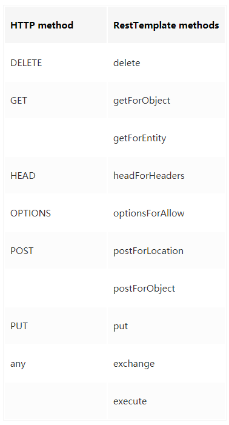
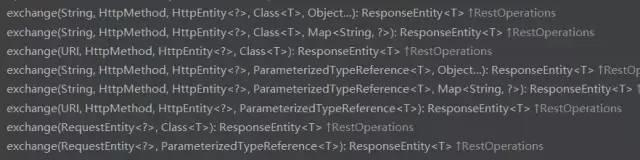

RestTemplate是Spring提供的用于访问Rest服务的客户端，RestTemplate提供了多种便捷访问远程Http服务的方法,能够大大提高客户端的编写效率。
我之前的HTTP开发是用apache的HttpClient开发，代码复杂，还得操心资源回收等。代码很复杂，冗余代码多，这是我封装好的一个post请求工具：
1 2 3 4 5 6 7 8 9 10 11 12 13 14 public String getJsonByparam (String url, List<BasicNameValuePair> formParams) throws IoException CloseableHttpClient httpClient = HttpClients.createDefault(); HttpPost httpPost = new HttpPost(url); httpPost.setHeader("Accept" ,"application/json" ); httpPost.setHeader("Content-Type" ,"application/x-www-form-urlencoded" ); UrlEncodedFormEntity formEntity = new UrlEncodedFormEntity(formParams,"UTF-8" ); httpPost.setEntity(formEntity); CloseableHttpResponse response = httpClient.execute(httpPost); HttpEntity entity = response.getEntity(); String resultPre = EntityUtils.toString(entity,"UTF-8" ); Document doc = Jsoup.parse(resultPre); return doc.text(); }
本教程将带领大家实现Spring生态内RestTemplate的Get请求和Post请求还有exchange指定请求类型的实践和RestTemplate核心方法源码的分析，看完你就会用优雅的方式来发HTTP请求。
1、简述RestTemplate
是Spring用于同步client端的核心类，简化了与http服务的通信，并满足RestFul原则，程序代码可以给它提供URL，并提取结果。默认情况下，RestTemplate默认依赖jdk的HTTP连接工具。当然你也可以 通过setRequestFactory属性切换到不同的HTTP源，比如Apache HttpComponents、Netty和OkHttp。
RestTemplate能大幅简化了提交表单数据的难度，并且附带了自动转换JSON数据的功能，但只有理解了HttpEntity的组成结构（header与body），且理解了与uriVariables之间的差异，才能真正掌握其用法。这一点在Post请求更加突出，下面会介绍到。
该类的入口主要是根据HTTP的六个方法制定：

此外，exchange和excute可以通用上述方法。
在内部，RestTemplate默认使用HttpMessageConverter实例将HTTP消息转换成POJO或者从POJO转换成HTTP消息。默认情况下会注册主mime类型的转换器，但也可以通过setMessageConverters注册其他的转换器。
其实这点在使用的时候是察觉不到的，很多方法有一个responseType 参数，它让你传入一个响应体所映射成的对象，然后底层用HttpMessageConverter将其做映射
1 2 HttpMessageConverterExtractor<T> responseExtractor = new HttpMessageConverterExtractor<>(responseType, getMessageConverters(), logger);
HttpMessageConverter.java源码：
1 2 3 4 5 6 7 8 9 10 11 12 public interface HttpMessageConverter <T > boolean canRead (Class<?> clazz, @Nullable MediaType mediaType) boolean canWrite (Class<?> clazz, @Nullable MediaType mediaType) List<MediaType> getSupportedMediaTypes () ; T read (Class<? extends T> clazz, HttpInputMessage inputMessage) throws IOException, HttpMessageNotReadableException ; void write (T t, @Nullable MediaType contentType, HttpOutputMessage outputMessage) throws IOException, HttpMessageNotWritableException }
在内部，RestTemplate默认使用SimpleClientHttpRequestFactory和DefaultResponseErrorHandler来分别处理HTTP的创建和错误，但也可以通过setRequestFactory和setErrorHandler来覆盖。
2、get请求实践
1 2 3 public <T> T getForObject (String url, Class<T> responseType, Object... uriVariables) {}public <T> T getForObject (String url, Class<T> responseType, Map<String, ?> uriVariables) public <T> T getForObject (URI url, Class<T> responseType)
getForObject()其实比getForEntity()多包含了将HTTP转成POJO的功能，但是getForObject没有处理response的能力。因为它拿到手的就是成型的pojo。省略了很多response的信息。
2.1.1、POJO:
1 2 3 4 5 6 7 8 9 10 11 12 13 public class Notice private int status; private Object msg; private List<DataBean> data; } public class DataBean private int noticeId; private String noticeTitle; private Object noticeImg; private long noticeCreateTime; private long noticeUpdateTime; private String noticeContent; }
示例：2.1.2 不带参的get请求
1 2 3 4 5 6 7 8 9 @Test public void restTemplateGetTest () RestTemplate restTemplate = new RestTemplate(); Notice notice = restTemplate.getForObject("http://xxx.top/notice/list/1/5" , Notice.class ) ; System.out.println(notice); }
控制台打印：
1 2 3 4 5 6 INFO 19076 --- [ main] c.w.s.c.w.c.HelloControllerTest : Started HelloControllerTest in 5.532 seconds (JVM running for 7.233) Notice{status=200, msg=null, data=[DataBean{noticeId=21, noticeTitle='aaa', noticeImg=null, noticeCreateTime=1525292723000, noticeUpdateTime=1525292723000, noticeContent='<p>aaa</p>'}, DataBean{noticeId=20, noticeTitle='ahaha', noticeImg=null, noticeCreateTime=1525291492000, noticeUpdateTime=1525291492000, noticeContent='<p>ah.......'
示例：2.1.3 带参数的get请求1
1 Notice notice = restTemplate.getForObject("http://fantj.top/notice/list/{1}/{2}" , Notice.class ,1,5) ;
明眼人一眼能看出是用了占位符{1}。
示例：2.1.4 带参数的get请求2
1 2 3 4 Map<String,String> map = new HashMap(); map.put("start" ,"1" ); map.put("page" ,"5" ); Notice notice = restTemplate.getForObject("http://fantj.top/notice/list/" , Notice.class ,map ) ;
明眼人一看就是利用map装载参数，不过它默认解析的是PathVariable的url形式。
2.2、getForEntity()方法
1 2 3 public <T> ResponseEntity<T> getForEntity (String url, Class<T> responseType, Object... uriVariables) {}public <T> ResponseEntity<T> getForEntity (String url, Class<T> responseType, Map<String, ?> uriVariables) {}public <T> ResponseEntity<T> getForEntity (URI url, Class<T> responseType) {}
与getForObject()方法不同的是返回的是ResponseEntity对象，如果需要转换成pojo，还需要json工具类的引入，这个按个人喜好用。不会解析json的可以百度FastJson或者Jackson等工具类。然后我们就研究一下ResponseEntity下面有啥方法。
ResponseEntity、HttpStatus、BodyBuilder结构
ResponseEntity.java
1 2 3 4 5 6 7 8 public HttpStatus getStatusCode () public int getStatusCodeValue () public boolean equals (@Nullable Object other) public String toString () public static BodyBuilder status (HttpStatus status) public static BodyBuilder ok () public static <T> ResponseEntity<T> ok (T body) {}public static BodyBuilder created (URI location)
HttpStatus.java
1 2 3 4 5 6 7 8 public enum HttpStatus { public boolean is1xxInformational () public boolean is2xxSuccessful () public boolean is3xxRedirection () public boolean is4xxClientError () public boolean is5xxServerError () public boolean isError () }
BodyBuilder.java
1 2 3 4 5 6 7 8 public interface BodyBuilder extends HeadersBuilder <BodyBuilder > BodyBuilder contentLength (long contentLength) ; BodyBuilder contentType (MediaType contentType) ; <T> ResponseEntity<T> body (@Nullable T body) ; ｝
可以看出来，ResponseEntity包含了HttpStatus和BodyBuilder的这些信息，这更方便我们处理response原生的东西。
示例：
1 2 3 4 5 6 7 8 9 10 11 12 13 14 15 16 17 18 @Test public void rtGetEntity () RestTemplate restTemplate = new RestTemplate(); ResponseEntity<Notice> entity = restTemplate.getForEntity("http://fantj.top/notice/list/1/5" , Notice.class ) ; HttpStatus statusCode = entity.getStatusCode(); System.out.println("statusCode.is2xxSuccessful()" +statusCode.is2xxSuccessful()); Notice body = entity.getBody(); System.out.println("entity.getBody()" +body); ResponseEntity.BodyBuilder status = ResponseEntity.status(statusCode); status.contentLength(100 ); status.body("我在这里添加一句话" ); ResponseEntity<Class<Notice>> body1 = status.body(Notice.class ) ; Class<Notice> body2 = body1.getBody(); System.out.println("body1.toString()" +body1.toString()); } statusCode.is2xxSuccessful()true entity.getBody()Notice{status=200 , msg=null , data=[DataBean{noticeId=21 , noticeTitle='aaa' , ... body1.toString()<200 OK,class com .waylau .spring .cloud .weather .pojo .Notice ,100 ]}>
}
当然，还有getHeaders()等方法没有举例。
3、 post请求实践
同样的,post请求也有postForObject和postForEntity。
1 2 3 public <T> T postForObject (String url, @Nullable Object request, Class<T> responseType, Object... uriVariables) throws RestClientException {}public <T> T postForObject (String url, @Nullable Object request, Class<T> responseType, Map<String, ?> uriVariables) throws RestClientException {}public <T> T postForObject (URI url, @Nullable Object request, Class<T> responseType) throws RestClientException {}
示例
我用一个验证邮箱的接口来测试。
1 2 3 4 5 6 7 8 9 10 11 12 @Test public void rtPostObject () RestTemplate restTemplate = new RestTemplate(); String url = "http://47.xxx.xxx.96/register/checkEmail" ; HttpHeaders headers = new HttpHeaders(); headers.setContentType(MediaType.APPLICATION_FORM_URLENCODED); MultiValueMap<String, String> map= new LinkedMultiValueMap<>(); map.add("email" , "844072586@qq.com" ); HttpEntity<MultiValueMap<String, String>> request = new HttpEntity<>(map, headers); ResponseEntity<String> response = restTemplate.postForEntity( url, request , String.class ) ; System.out.println(response.getBody()); }
执行结果：
{“status”:500,”msg”:”该邮箱已被注册”,”data”:null}
代码中，MultiValueMap是Map的一个子类，它的一个key可以存储多个value，简单的看下这个接口：
1 public interface MultiValueMap <K , V > extends Map <K , List <V >>
为什么用MultiValueMap?因为HttpEntity接受的request类型是它。
1 2 public HttpEntity (@Nullable T body, @Nullable MultiValueMap<String, String> headers)
为什么用HttpEntity是因为restTemplate.postForEntity方法虽然表面上接收的request是@Nullable Object request类型，但是你追踪下去会发现，这个request是用HttpEntity来解析。核心代码如下：
1 2 3 4 5 6 7 if (requestBody instanceof HttpEntity) { this .requestEntity = (HttpEntity<?>) requestBody; }else if (requestBody != null ) { this .requestEntity = new HttpEntity<>(requestBody); }else { this .requestEntity = HttpEntity.EMPTY; }
我曾尝试用map来传递参数，编译不会报错，但是执行不了，是无效的url request请求(400 ERROR)。其实这样的请求方式已经满足post请求了，cookie也是属于header的一部分。可以按需求设置请求头和请求体。其它方法与之类似。
4、使用exchange指定调用方式

但是你会发现exchange的方法中似乎都有@Nullable HttpEntity requestEntity这个参数，这就意味着我们至少要用HttpEntity来传递这个请求体，之前说过源码所以建议就使用HttpEntity提高性能。
示例
1 2 3 4 5 6 7 8 9 10 11 12 13 14 15 @Test public void rtExchangeTest () throws JSONException RestTemplate restTemplate = new RestTemplate(); String url = "http://xxx.top/notice/list" ; HttpHeaders headers = new HttpHeaders(); headers.setContentType(MediaType.APPLICATION_FORM_URLENCODED); JSONObject jsonObj = new JSONObject(); jsonObj.put("start" ,1 ); jsonObj.put("page" ,5 ); HttpEntity<String> entity = new HttpEntity<>(jsonObj.toString(), headers); ResponseEntity<JSONObject> exchange = restTemplate.exchange(url,HttpMethod.GET, entity, JSONObject.class ) ; System.out.println(exchange.getBody()); }
这次可以看到，我使用了JSONObject对象传入和返回。
当然，HttpMethod方法还有很多，用法类似。
5、excute()指定调用方式
需要强调的是，execute()方法是以上所有方法的底层调用。随便看一个：
1 2 3 4 5 6 7 8 9 @Override @Nullable public <T> T postForObject (String url, @Nullable Object request, Class<T> responseType, Map<String, ?> uriVariables) throws RestClientException { RequestCallback requestCallback = httpEntityCallback(request, responseType); HttpMessageConverterExtractor<T> responseExtractor = new HttpMessageConverterExtractor<>(responseType, getMessageConverters(), logger); return execute(url, HttpMethod.POST, requestCallback, responseExtractor, uriVariables); }


Copyright 2021 sunfy.top ALL Rights Reserved